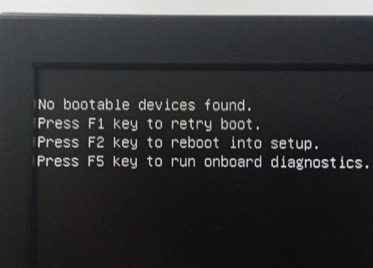

4.5-Reset dan Format PC
Tugasan yang diberi adalah diminta untuk Reset dan Format PC yang bertujuan untuk 'Delete File' yang tidak diperlukan, dan juga boleh memulihkan ralat sistem yang berlaku pada Cakera Keras atau dikenali sebagai 'Hard Disk' yang disebabkan oleh 'Error File' atau 'Virus'. Akan tetapi sebelum membuat Reset dan Format PC perlu membuat 'Backup File' sekiranya penting digunakan. Merujuk rajah di bawah merupakan ralat yang berlaku dalam 'Hard Disk'.

Untuk tugasan ini memerlukan 'Software Installer Windows' yang dipasang melalui 'CD-Rom' atau 'Pendrive'. Dalam syarikat ini, tugasan yang saya lakukan adalah Reset dan Format PC yang telah habis tamah tempot sewaan. Ini bertujuan untuk membuang semua file yang berkenaan dengan syarikat sekaligus menjaga identiti data peribadi tentang syarikat sebelum dipulangkan semula kepada pembekal penyewa komputer.
Dalam tugasan ini saya melakukan Reset dan Format PC dengan Windows Installation USB/CD (Windows 7/8/10). Antara langkah untuk melakukan Reset dan Format PC adalah seperti berikut :-
i. Langkah pertama. Tekan 'F12' untuk masuk ke Basic Input/Output System (BIOS) bila hidupkan komputer. Pilih 'Advanced BIOS Features' dan set 'First Boot Device' ke 'CD-Rom'. Kemudian utamakan kan 'Legacy' untuk masuk ke 'CD-Rom dan Klik 'Apply' untuk 'Save' dan 'Exit Setup'.
ii. Langkah kedua. Masuk 'Windows installer USB atau CD' kedalam komputer, dan enter 'CD-Rom' untuk ke 'Windows Installations'.
iii. Langkah ketiga. Setelah masuk ke 'Windows Installations', tandakan 'I accept the license terms' dan klik 'Next'.
iv. Langkah keempat. 'Select' dan 'Delete' semua 'Disk Partition' yang ada.
v. Langkah kelima. 'Create New Partitions' dan 'Delete' sehingga berulang 3 kali untuk memastikan file tersebut sudah 'Reset' dan 'Format'.
vi. Setelah selesai, tekan pangkah untuk keluar dari 'Windows Installations' dan keluarkan 'CD-Rom' serta selarakan semula tetapan BIOS kepada yang asal. Fail opeasi sistem dan segala maklumat dalam cakera keras telah dihapuskan dan komputer akan memaparkan 'No Bootable Devices Found' yang menunjukkan tiada fail operasi sistem yang dapat dibaca.
